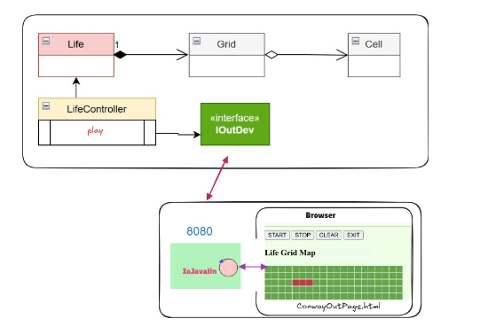

Introduction
Goal: Realizzazione in Java del
GAME OF LIFE DI CONWAY con GUI del gioco realizzata come una pagina Web.
La logica del gioco è già stata analizzata nello Sprint1.
Utiliziamo quindi il risultato ottenuto, che costituisce un sottosistema funzionante, come punto di partenza per questo nuovo lavoro (deployed in un file conway26Java-1.0.jar).
Requirements
Ricordiamo dai requisiti dello
Sprint1.
che l’utente umano deve poter:
- specificare la configurazione iniziale della griglia del gioco
- vedere l’evoluzione del gioco in forma opportuna (si veda Problema della vista del gioco )
- fermare e far ripartire l’evoluzione del gioco
- pulire (a gioco fermo) la configurazione della griglia del gioco
Ora si aggiungo i seguenti requisiti:
-
dotare il gioco Life di una pagina HTML come dispositivo di I/O
-
la pagina deve costituire un componente esterno alla applicazione secondo la architettura riportata in
IoJavalin esterno all'applicazione
-
il gestore del gioco sarà l’utente che ha aperto per primo (owner) una pagina HTML collegata al gioco. In altre
parole, solo la pagina dell’owner avrà pulsanti di comando START/STOP/CLEAN/EXIT attivi
-
la pagina HTML deve essere aggiornata in modo automatico man mano il gioco procede
-
un utente non owner che si collega mentre il gioco è in corso, dovrebbe vedere lo stato attuale della griglia in
modo corretto
-
il deployment del gioco deve avvenire mediante Docker
Requirement analysis
Il requisito di dotare il gioco di una pagina HTML si inquadra nel contesto dei moderni sistemi Web, che vengono supportati da appositi servere da Browser.
Analizzo l'architettura del sistema che voglio realizzare (javalin esterno all'applicazione), riportata in questo modello informale:

Il dispositivo di I/O utilizza un client WebSocket per interagire col server che eroga la pagina, che viene creata in modo indipendente dalla applicazione.
Il componente che utilizza il server (d'ora in poi indicato con iojavalin) è parte di un componente (servizio) esterno all'applicazione, che quindi dovrà realazionarsi con il LifeController applicativo mediante dei messaggi.
Il committente ha indicato che l'interazione applicazione-servizio, almeno in questo prototipo iniziale, dovrà avvenire via Web sulla porta 8080. In futuro si potrà discutere l'utilizzo di protocolli diversi, come MQTT.
Problem analysis
Lo scenario da affrontare è quello di un sistema distribuito in cui:
- una parte del sistema (GUI) è del tutto nuova rispetto allo Sprint1 (Job1)
- una parte del sistema (applicazione) è già disponibile e deve essere "adattata" a interagire con la GUI (Job2)
Queste due parti costituiranno un sistema solo se capaci di interagire in modo opportuno scambiandosi informazioni via rete sotto forma di messaggi.
E' importante quindi andare a delineare le interazioni tra i componenti del sistema e la natura dei mesaggi scambiati.
IApplMessage
, ovvero qualcosa del tipo msg( MSGID, MSGTYPE, SENDER, RECEIVER, CONTENT, SEQNUM ).
Questo modo di esprimere i messaggi implica che ciascun componente abbia un nome: lifectrl sarà l'applicazione e guiserver il componente che include iojavalin.
Per quanto detto nell'analisi dei requisiti la comunicazione tra i componenti avverrà tramite WS.
lifectrl si deve manifestare a guiserver aprendo uan connessione WS sulla porta 8080- Ciò implica cge guiserver debba gestire almento due connessioni: quella con la pagina owner (pageCtx) e quella con l'appliocazione (lifeCtrlCtx).
Si ha un vincolo implicito dovuto alla configuarazione del sistema attuale, in cui guiserver fingue da dispositivo I/O per il livello applicativo: quest'ultimo utilizza la stessa connessione sia per ricevere l'input sia per inviare l'output al server.
Lato server:
-
comunicazioni pagina-server: è opportuna che la pagina comunichi con un servizio applicativo come guiserver usando stringhe di uesto tipo msg( MSGID, MSGTYPE, SENDER, RECEIVER, CONTENT, SEQNUM ), in modo da permettere a guiserver di ottenre degli oggetti che rispettano l'interfaccia IApplMessage.
I messaggi inviati dalle pagine sono di tipo fire-and-forget (dispatch), in quanto devono provocare un'azione lato server senza implicare la ricezione di una risposta.
Per quanto riguarda la denominazione delle pagine non è opportuno che siano auto-attribuiti dalla pagina stessa, invece conviene che sia il server a dare il nome ad una pagina che si connette.
una pagina ha inizialmente il nome unknown (utilizato come SENDER alla prima connessione con il server). Il guiserver reagisce a una richiesta di connessione forgiando un nome di sua invenzione e tiene traccia della prima erogata (owner).
In questo modo il server potrà evitare di gestire comandi provenienti dai pulsanti di pagine che non sono owner.
Per quanto rigurda invece i comandi da pagine a server conterranno nel payload CONTENT una semèplice stringa quale start/stop/clear oppure cell(x.y) per indicare quale azione è stata eseguita lato utente. Alla ricezione di dispatch di questo genere, guiserver dovrà inviare a sua volta un messaggio di comando a lifectrl (se provenienti dall'owner), ritrasmettendolo sulla connessione lifeCtrlCtx.
Nel caso di payload cell(x,y), lifectrl dovrà commutare lo stato della cella di coordinate indicate e iniviare un comando di aggiornamento a guiserver.
-
comunicazioni server-pagina: il server invia alla pagina comandi espressi da semplici stringhe (con messaggi di aggiornamento cella per cella se la griglia è rappresentata in modo granulare, con lo stato di tutta la griglia se invece si utilizza l'elemento canvas). Questi semplici comndi-strigna dovranno essere interpretati e gestiti da codice JavaScript definito nella pagina (specifica del codice rimandata alla fase di Progetto).
Osserviamo che, una volta attivato, il componente guiserver permette che un browser possa onnettersi specificanfo un url con porta 8080. tuttavia, il browser visualizzerà una pagina senza alcuna rappresentazione delle griglia.
-
comunicazioni guiserver-applicazione: il Job2 nosiste nella realizzazione di una implementazione di
IOutDev
all'interno del componente applicativo, che stabilisca una Interconnessione basata su WS con la GUI.
La prima cosa che il dispositivo lato applicativo deve fare è manifestare al guiserver l'esistenza del livello applicativo inviando il dispatch con id="setcontroller". Alla ricezione di questo comando il server memorizza in lifeCtrlCtx la connessione con il livello applicativo.
Tutta la logica di interazione tra l'applicazione e il guiserver deve essere gestita dalla classe
OutInGuiInteraction
Test plans
In base al requisito R3, il comportamento atteso in caso di più utenti è che ogni pagina mostri i pulsati, ma che un click su questi provochi degli effetti solo nel caso in cui la pagine sia dell'owner del gioco.
Per testare questo comportamento, visto che impostare teest automatizzati per pagine HMTL è complicato, mi limito ad andare a verificare il comportamento dell'applicazione aprendo su due browser dello stesso computer localhost:8080 e verificare che solo il primo che è stato aperto riesce a controllare il gioco.
Una volta definite le forme di interazione tra i componenti si possono sviluppare delle JUnit che invino comandi conformi e facciano asserzioni sul risultato atteso.
Project
Tenendo conto di quanto detto nell'analisi, a livellodi progettaazione dobbiamo:
-
impostare il codice JavaScript per interpretare i messaggi prevenienti da lifectrl. A tal fine definiamo:
wscancascontrol.js per le pagine con griglia globale e
wscontrol.js per le pagine con griglia granulare.
Testing
Deployment
Maintenance
 GIT repo: https://github.com/gianluca-varisco/issLab2026
GIT repo: https://github.com/gianluca-varisco/issLab2026